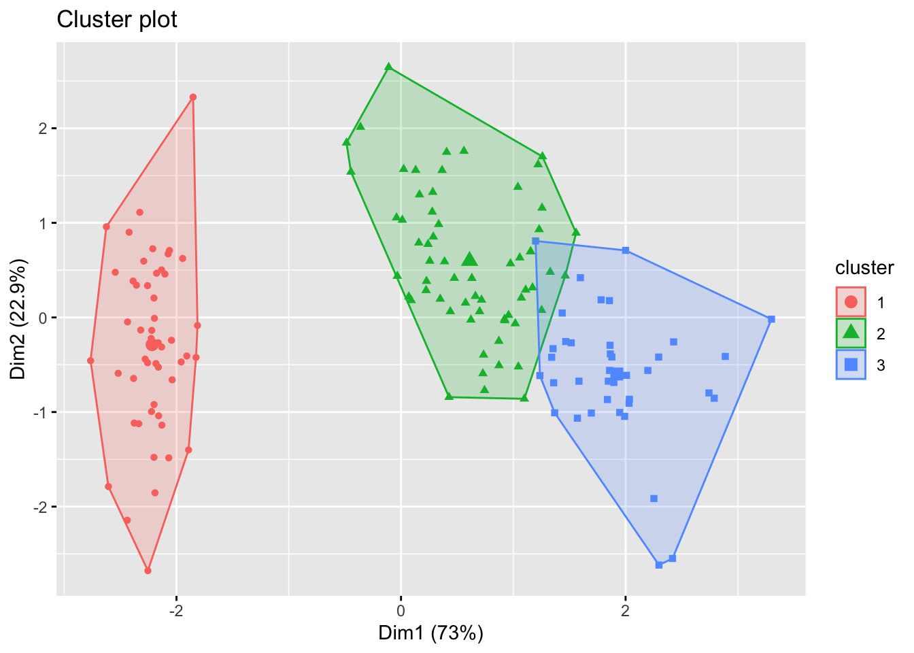
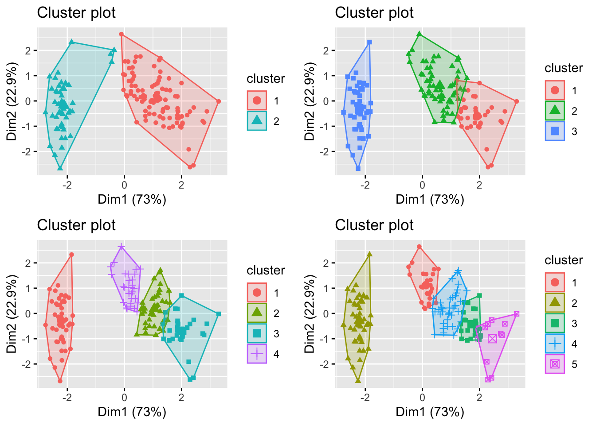
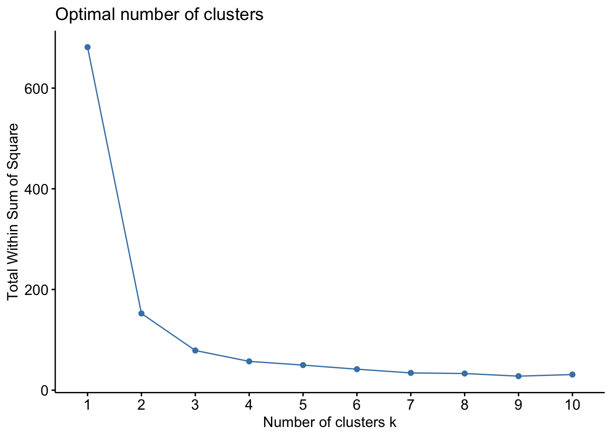

7.1 K-means clustering
Suppose we have a sample of \(n\) vectors \(\mathbf x_1, \ldots , \mathbf x_n \in \mathbb{R}^p\). Consider the situation where \(\mathbf x_i\) comes from one of \(K\) sub-populations (I used \(g\) previously, but this method is known as ‘K’-means so we’ll use \(K\) instead of \(g\) here). We’ll initially assume \(K\) is known, but will discuss how to choose \(K\) later.
The key point is that we do not know which sub-population each \(\mathbf x_i\) comes from, i.e., we do not know how to allocate the observations to sub-populations. The goal of cluster analysis is to allocate each case, \(\mathbf x_1, \ldots, \mathbf x_n\), to one of \(K\) clusters, \(\mathcal{C}_1, \ldots , \mathcal{C}_k\), in such a way that observation vectors within a cluster tend to be more similar to each other, in some sense, than to observations in different clusters.
Each data point, \(\mathbf x_i\), will be allocated to precisely one cluster: \[\mathbf x_i \in \mathcal{C}_j\] so that the clusters partition the \(n\) cases: \[ \bigcup_{j=1}^k \mathcal{C}_j = \{\mathbf x_1, \ldots , \mathbf x_n\}, \qquad \text{and} \qquad \mathcal{C}_j \cap \mathcal{C}_{j'} =\emptyset,\qquad j \neq j'. \]
It will be convenient to introduce an alternative, but equivalent, way to describe the allocation of cases to clusters. We will do this with an encoder, \(\delta(i)\), for \(i=1, \ldots,n\), with:
\[\begin{equation} \delta(i) = j \iff \mathbf x_i \in \mathcal{C}_j. \tag{7.1} \end{equation}\] We write \(\boldsymbol \delta=(\delta(1),\ldots , \delta(n))^\top\) for the vector of \(n\) different cluster indicators.
7.1.1 Estimating \(\boldsymbol \delta\)
We think of the encoder \(\delta(i)\) as a parameter that we need to estimate: \(\boldsymbol \delta\in \mathbb{N}^{n}\). We estimate it by picking a loss function, and then seeking to minimize that loss. A natural choice for the loss function is to use the within-cluster scatter that we saw previously:
\[W(\delta) = \frac{1}{2}\sum_{k=1}^K \sum_{i: \delta(i)=k} \sum_{i': \delta(i')=k} d(\mathbf x_i, \mathbf x_{i'})\] for some distance function \(d\). As in Chapter 6, we can split the total point scatter into within-cluster and between-cluster scatter: \[\begin{align} T&= W(\boldsymbol \delta)+B(\boldsymbol \delta)\\ \frac{1}{2}\sum_{i=1}^n \sum_{i'=1}^n d(\mathbf x_i, \mathbf x_{i'})&= \frac{1}{2}\sum_{k=1}^K \sum_{i: \delta(i)=k} \left(\sum_{i': \delta(i')=k} d(\mathbf x_i, \mathbf x_{i'})+\sum_{i': \delta(i')\not=k} d(\mathbf x_i, \mathbf x_{i'})\right) \end{align}\] and so minimizing within-cluster scatter is equivalent to maximizing between-cluster scatter.
In general, solving the optimization problem
\[\hat{\boldsymbol \delta} = \arg \min_{\boldsymbol \delta} W(\boldsymbol \delta)\] is impossible in most cases, as the number of possible allocations of cases to clusters explodes combinatorially. So instead of searching through all possible choices of \(\boldsymbol \delta\) we take an iterative greedy descent approach. These work by
- Picking an initial partition \(\boldsymbol \delta\).
- At each step, the cluster assignments are changed to reduce the loss function \(W(\boldsymbol \delta)\)
7.1.2 K-means
K-means clustering is the most commonly used iterative descent clustering method. It uses the squared Eucliden distances between points \[d(\mathbf x_i, \mathbf x_{i'})=||\mathbf x_i - \mathbf x_{i'}||_2^2.\]
In this case, the within-cluster scatter reduces to \[\begin{align} W(\delta) &= \frac{1}{2}\sum_{k=1}^K \sum_{i: \delta(i)=k} \sum_{i': \delta(i')=k} ||\mathbf x_i - \mathbf x_{i'}||_2^2 \\ &= \sum_{k=1}^K n_k \sum_{i: \delta(i)=k} ||\mathbf x_{i} - \hat{{\boldsymbol{\mu}}}_k||_2^2 \tag{7.2}\\ \end{align}\]
where \(n_k = \sum_{i=1}^n \mathbb{I}_{\delta(i)=k}\) is the number of points assigned to cluster \(k\), and
\[\hat{{\boldsymbol{\mu}}}_k=\frac{1}{n_k}\sum_{i: \delta(i)=k} \mathbf x_i\] is the mean vector of the points assigned to cluster \(k\) (you’ll be asked to prove this in the Exercises).
Thus we can see that k-means aims to minimize the sum of the square distance from each point to its cluster mean.
The greedy iterative approach used in K-means clustering is thus as follows:
For a given cluster assignment \(\boldsymbol \delta\), find the mean of each cluster \(\hat{{\boldsymbol{\mu}}}_1, \ldots, \hat{{\boldsymbol{\mu}}}_K\).
Given a set of cluster means \(\hat{{\boldsymbol{\mu}}}_1, \ldots, \hat{{\boldsymbol{\mu}}}_K\), allocate each point to the closest cluster mean, i.e., set \[\delta(i) = \arg \min_k ||\mathbf x_i - \hat{{\boldsymbol{\mu}}}_k||_2^2\]
Iterate steps 1. and 2. until convergence.
Note that the result of these steps might be a sub-optimal local minimum. Thus, we usually run \(K\)-means several times with different random initial choices for \(\boldsymbol \delta\), and then choose the best solution.
7.1.3 Example: Iris data
Consider the iris data again. Suppose we are given the petal and sepal length and widths, but not told which species each iris belongs to. I.e., suppose we are given the data
| Sepal.Length | Sepal.Width | Petal.Length | Petal.Width |
|---|---|---|---|
| 5.1 | 3.5 | 1.4 | 0.2 |
| 4.9 | 3.0 | 1.4 | 0.2 |
| 4.7 | 3.2 | 1.3 | 0.2 |
| 4.6 | 3.1 | 1.5 | 0.2 |
| 5.0 | 3.6 | 1.4 | 0.2 |
Our goal is to find clusters within the data. These are groups of irises that are more similar to each other than to those in other groups (clusters). These clusters may correspond to the Species label (which we aren’t given), or they may not. The goal of cluster analysis is not to predict the species, but simply to group the data into similar clusters.
Let’s look at finding 3 clusters. We can do this using the kmeans command in R.
iris2 <- iris[,1:4]
# nstart gives the number of random initialisations to try
set.seed(123)
(iris.k <- kmeans(iris2, centers = 3, nstart=25)) ## K-means clustering with 3 clusters of sizes 50, 62, 38
##
## Cluster means:
## Sepal.Length Sepal.Width Petal.Length Petal.Width
## 1 5.006000 3.428000 1.462000 0.246000
## 2 5.901613 2.748387 4.393548 1.433871
## 3 6.850000 3.073684 5.742105 2.071053
##
## Clustering vector:
## [1] 1 1 1 1 1 1 1 1 1 1 1 1 1 1 1 1 1 1 1 1 1 1 1 1 1 1 1 1 1 1 1 1 1 1 1 1 1
## [38] 1 1 1 1 1 1 1 1 1 1 1 1 1 2 2 3 2 2 2 2 2 2 2 2 2 2 2 2 2 2 2 2 2 2 2 2 2
## [75] 2 2 2 3 2 2 2 2 2 2 2 2 2 2 2 2 2 2 2 2 2 2 2 2 2 2 3 2 3 3 3 3 2 3 3 3 3
## [112] 3 3 2 2 3 3 3 3 2 3 2 3 2 3 3 2 2 3 3 3 3 3 2 3 3 3 3 2 3 3 3 2 3 3 3 2 3
## [149] 3 2
##
## Within cluster sum of squares by cluster:
## [1] 15.15100 39.82097 23.87947
## (between_SS / total_SS = 88.4 %)
##
## Available components:
##
## [1] "cluster" "centers" "totss" "withinss" "tot.withinss"
## [6] "betweenss" "size" "iter" "ifault"From this output we can read off the final cluster means, and the encoder \(\boldsymbol \delta\). Also given is the final within-cluster sum of squares for each cluster.
We can visualise the output of \(K\)-means using the fviz_cluster command from the factoextra package. This first projects the points into two dimensions using PCA, and then shows the classification in 2d, and so some caution is needed in interpreting these plots.
library(factoextra)
fviz_cluster(iris.k, data = iris2,
geom = "point")
Finally, in this case we know that there really are three clusters in the data (the three species). We can compare the clusters found using K-means with the species label to see if they are similar. The easiest way to do this is with the table command.
table(iris$Species, iris.k$cluster)##
## 1 2 3
## setosa 50 0 0
## versicolor 0 48 2
## virginica 0 14 367.1.4 Choosing \(K\)
In the iris data, we know there are 3 distinct species. But suppose we didn’t know this. What happens if we try other values for \(K\)?

How do we choose between these different values of \(K\)? In general, if we choose \(K\) too large, then each individual case will begin to represent a cluster. Conversely, if \(K\) is too small then we will find data points are incorrectly clustered together.
The best approach for choosing \(K\) is to use domain knowledge when it is available. In the case where there is no prior knowledge of how many clusters we expect to find, we can use a data-driven approach for choosing \(K\). A common approach data-driven approach is known as the elbow method. This approach looks at the within-cluster sum of squares \(W(\delta)\) as the number of clusters changes, i.e., we compute \(W_1, W_2, \ldots, W_{K_{max}}\). \(W\) will decrease as the number of clusters increases, but we can look for the point where the decrease slows down. The intuition is that if we’ve used \(K\) clusters when really the data consist of \(K+1\) clusters, \(W_K-W_{K+1}\) will be large. In constrast, if there are really \(K\) clusters, and we use \(K^*>K\) then at least one of the estimated clusters must partition one of the natural groups, and so the change in \(W\) will be less. As you can see, this is not an exact science!
For the iris data, we can create an elbow plot using the fviz_nbclust command from the factoextra package.
fviz_nbclust(iris2, kmeans, method = "wss")
In this case, I would probably decide there most likely three natural clusters in the data, as there is a reasonable decrease in \(W\) when moving from 2 to 3 clusters, but moving to 3 clusters only yields a minor improvement. Note here the slight increase in W in moving from 9 to 10 clusters. This is due to only using a greed search, rather than an exhaustive one (we know the best 10-group cluster must be better than the betst 9-group cluster, we just have found it).